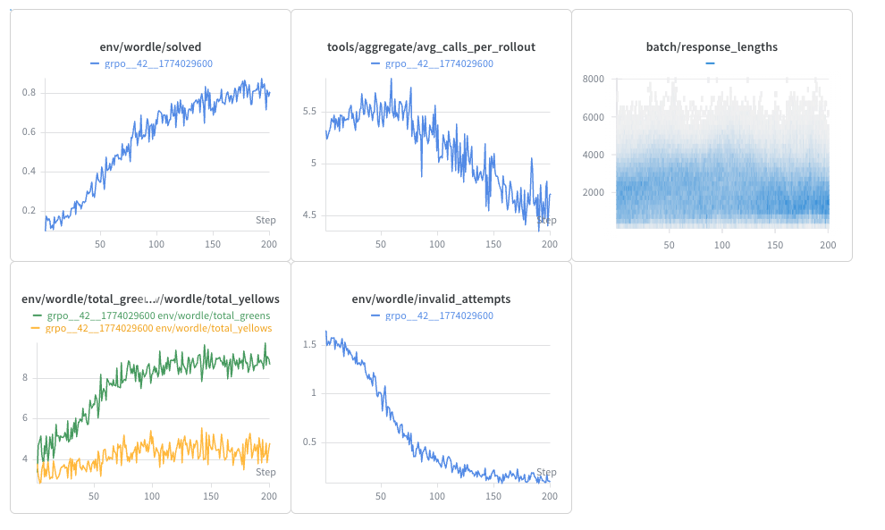

Training Tool-Using Models and RL Environments
This page is for people who want to train models in Open-Instruct that do more than produce a single final answer. You can use it to:
- train a model to call tools such as Python, web search, browsing, or MCP servers
- train against stateful RL environments such as guessing games or Wordle
- combine intermediate environment rewards with a final verifier-based reward
The recommended workflow is user-facing and script-first: start from an existing debug or training script, choose the tool or environment setup you want, then adjust the configuration for your dataset and infrastructure. You should not need to build a new training loop just to add tool use.
Right now, Open-Instruct supports a simple interaction model where environment outputs are appended back into the conversation during multi-turn GRPO rollouts.
Example Scripts
Start from one of these scripts. They are the fastest way to see the expected config shape and get a working run before customizing anything.
| Script | Description |
|---|---|
scripts/train/debug/tools/qwen3_vllm_hermes_parser_debug.sh |
Train a model to call common tools with a standard chat-style parser |
scripts/train/debug/tools/mcp_weather_debug.sh |
Train a model against tools exposed by an MCP server |
scripts/train/debug/tools/dr_tulu_parser_debug.sh |
Reproduce a DR-Tulu-style tool-calling setup |
scripts/train/debug/envs/guess_number_1gpu.sh |
Train against a built-in tool-style environment |
scripts/train/debug/envs/wordle_8gpu.sh |
Train against a built-in text environment. This uses mason to launch, so non-AI2 users will likely need to adapt the launcher. |
Quick Parameter Overview
These are the main parameters you will usually touch when enabling tools or environments:
| Parameter | What it controls | Typical use |
|---|---|---|
--tools |
Which tools or environments are active for the run | --tools python serper_search. Look at TOOL_REGISTRY for the full list. |
--tool_call_names |
The names the model sees and emits when calling those tools, in the order matching --tools. |
--tool_call_names code search |
--tool_configs |
Per-tool or per-environment settings, set globally for the run. e.g.API endpoints, MCP server info, timeouts, environment defaults. Again, order must match --tools. |
--tool_configs {'api_key': '1234567890'} {} |
--tool_parser_type |
How model output is parsed into tool calls. See Parsers for more details. Use vllm_* unless you know what you are doing. |
--tool_parser_type vllm_hermes |
--max_steps |
Maximum number of tool/environment interaction steps per rollout. | --max_steps 200 |
--per_turn_max_tokens |
Optional per-turn token limit for each tool/environment interaction step. Useful if you want to allow many interactions (large overall response length) but limit amount of tokens per step. | --per_turn_max_tokens 1024 |
--pass_tools_to_chat_template |
By default true, but you can turn it off if you have a custom system prompt or parser that already provides information about the tools. | --pass_tools_to_chat_template True |
--pool_size |
Number of worker actors per tool or environment. Increase if tool calls are becoming a bottleneck. Controls how many concurrent tool/environment interactions can run at once (e.g. useful for rate limits). By default, this is set to the number of rollouts per batch (num_rollouts_per_batch * num_unique_prompts_rollout). |
--pool_size 16 |
--reward_aggregator |
How per-step rewards are combined across the rollout. Can be last (just take the last step's reward) or sum (add up all step rewards). |
--reward_aggregator sum |
How the Rollout Works
At a high level, a tool- or environment-enabled rollout looks like this:
- Open-Instruct builds the prompt from your dataset example.
- The model generates one turn of text.
- The parser either extracts a structured tool call or forwards the full text to a text environment.
- The selected tool or environment returns a
StepResult. - The
StepResult.resulttext is formatted and appended back into the conversation. - Training continues until the rollout hits
max_stepsor a step returnsdone=True. - Per-step rewards are aggregated with
--reward_aggregator, then combined with any final verifier reward.
The key implementation idea is that you configure the rollout from the script layer, while Open-Instruct handles the multi-turn dispatch loop underneath.
Adding Your Own Tools or Environments
When adding your own tool or environment, there are three potential options:
| Class | Description |
|---|---|
Tool |
A stateless tool that can be called by the model. You only need to implement the step method. |
RLEnvironment |
A stateful environment that can be used to train a model. You need to implement the reset and step methods. Interfaces with the model via tool/function calling. |
TextRLEnvironment |
A stateful environment that receives the model's full generation at each step. Use this when you want custom parsing or reward logic without relying on structured tool calls. In practice, subclasses implement _reset and text_step. |
As a rule of thumb:
- use
Toolfor stateless request/response integrations like Python execution or web search. - use
RLEnvironmentfor stateful tasks where the model acts through tool/function calls, e.g. a docker sandbox. - use
TextRLEnvironmentwhen the environment should inspect the model's raw text directly, e.g. proper multi-turn training with a simulated user.
reset is primarily for environment setup and returns the initial StepResult plus tool definitions. For stateless tools, the default reset implementation mainly exposes the tool schema.
Note that behind the scenes, Open-Instruct creates a worker pool for each tool or environment, and passes the config fields into the constructor. As such, each rollout gets a fresh instance of the tool or environment, and so you can store state inside the tool or environment object if you want!
After this, you need to add a config class for your tool or environment for any runtime parameters that are not part of the EnvCall interface!
Config classes and how config wiring works
Each tool or environment is paired with a config dataclass that subclasses BaseEnvConfig. In practice, this is the object that holds the fixed settings for that tool or environment, such as API endpoints, timeouts, or game parameters.
These config elements can have defaults, be set globally for a run, and/or be overridden per-sample in the dataset. This can be useful if you want to use the same tool or environment with different settings for different samples.
tool_name vs tool_call_name
By default, the name you pass in --tools is also the name the model uses when calling that tool. You can override the model-facing name with --tool_call_names.
For example:
--tools python serper_search \
--tool_call_names code search
In that case:
- Open-Instruct looks up
pythonandserper_searchin the registry, and creates environments using the corresponding classes. - the model sees and calls
codeandsearchin its function calling interface.
This can be useful if you want to swap tool backends without changing the name the model uses, or if you want the tool names in training to better match some external setup you are reproducing.
How tool definitions are exposed to the model
Tool definitions are the OpenAI-style function schemas returned by get_tool_definitions(). Open-Instruct collects these definitions from the active tool or environment pools and uses them in two places:
- to tell the parser which function names and argument schemas are valid
- to pass tool schemas into the chat template when
--pass_tools_to_chat_templateis enabled
This is the main connection between tools and environments: both ultimately expose tool definitions to the model, even if the underlying implementation is stateful.
For a plain Tool, get_tool_definitions() usually exposes a single function schema. For a stateful RLEnvironment, get_tool_definitions() can expose one or more actions the model may take. For TextRLEnvironment, reset() returns no tool definitions, because the model interacts through raw text instead of function calls.
For example, if you configure:
--tools python \
--tool_call_names code
then the model is shown a function definition named code, not python. If your dataset uses per-sample tools filtering, those entries should also use code, because that is the function name exposed to the model.
Subclass implementation details
The step interface takes an EnvCall object, which contains:
name: the tool or action nameargs: a keyword dict containing parsed arguments
These arguments should follow the OpenAI function calling spec, so in practice you should stick to JSON-serializable types.
The step method returns a StepResult, which contains the fields that matter during training:
result: the observation text appended back into the conversationreward: the per-step rewarddone: whether the rollout should terminate earlymetadata: optional debugging or runtime information
The reward is stored per turn and then aggregated at the end of the rollout depending on --reward_aggregator. If done=True, generation stops immediately.
Text environment implementation note
TextRLEnvironment has a slightly different contract than Tool or RLEnvironment. Instead of receiving a parsed tool call from the model, it receives the model's full text output. Internally, Open-Instruct wraps that text into a synthetic EnvCall under args["text"] and forwards it to text_step.
This is why text environments are the right fit when:
- the model should emit plain text rather than strict tool calls
- the environment needs to do its own parsing
- reward depends on text format or multi-turn text behavior
Minimal implementation sketch
For most custom integrations, the required surface is intentionally small:
class MyEnv(RLEnvironment):
async def reset(self, **kwargs):
return StepResult(result="initial observation"), tool_definitions
async def step(self, call: EnvCall):
return StepResult(result="next observation", reward=0.0, done=False)
For a text environment:
class MyTextEnv(TextRLEnvironment):
async def _reset(self, **kwargs):
return StepResult(result="")
async def text_step(self, text: str):
return StepResult(result="feedback", reward=0.0, done=False)
Parsers
Parsers are responsible for handling text formatting: both extracting tool calls from the model generation (either to call tools or to interact with environments) and formatting environment observations back into the conversation. We support three types of parsers right now:
| Parser | Description |
|---|---|
legacy |
XML-tag prompts within the assistant turn. Expects <tool_name>...</tool_name>; only passes the string inside to the tool. |
vllm_* |
Wrapper around vLLM's native parsers. Uses native vLLM parsing to extract tool calls, and then wraps to add observation formatting. We support vllm_hermes, vllm_llama3_json, vllm_olmo3, and vllm_qwen3xml, and it should be easy to add more. |
dr_tulu |
Wrapper around the dr_agent_mcp tool for DR-Tulu-style tool calling. |
We recommend using vllm_* parsers unless you have a strong reason for using another parser.
Example Script: Wordle
The scripts/train/debug/envs/wordle_8gpu.sh script is a good example of how to train against a built-in text environment. It uses the vllm_hermes parser together with the WordleTextEnv class. The environment handles parsing guesses, generating feedback, and assigning rewards. Over 200 steps, the training curves should look something like this:

You can see the wandb for this run here and the beaker link here.